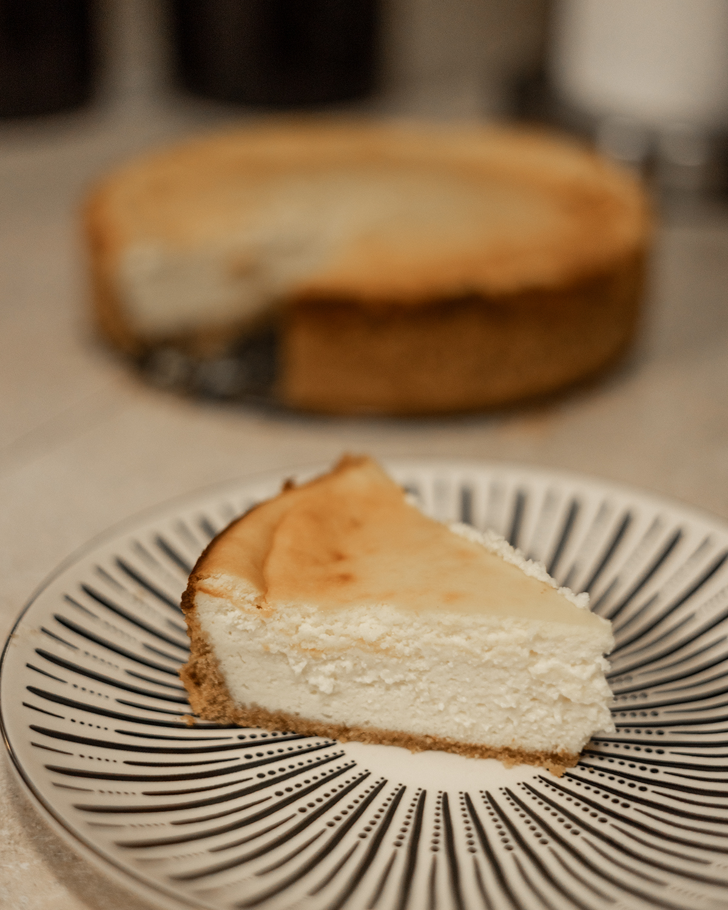

Cheesecake

This is a classic creamy and fluffy cheesecake that provides a neutral base for many different toppings. I personally prefer a fresh fruit or pie filling as the topping. It can also be enjoyed on its own. This recipe also scales easily to make different serving sizes, simply 8 oz of cream cheese to 1 egg and 1/4 cup of sugar. Adjust the crust as needed.
Ingredients
- 1 sleeve of graham crackers (mine had 9)
- 1/4 cup butter, melted
- 1 tbsp granulated sugar
- 24 oz cream cheese, room temperature
- 3/4 cup granulated sugar
- 1.5 tbsp vanilla extract
- 3 large eggs
Instructions
- Preheat oven to 350°F (175°C). In a food processor, crush the graham crackers into fine crumbs. Add the tablespoon of sugar and mix well. Add in the melted butter and stir unti combined.
- In an 8 inch springform pan, press the crust mixture into the bottom and up the sides. Set aside.
- In a large bowl, with a hand mixer,beat room temperature cream cheese until smooth. Add the granulated sugar and vanilla extract, and beat until well combined. Then add eggs and continue beating until well incorporated. You cannot overmix a cheesecake batter so go crazy.
- Pour the cream cheese mixture over the crust. bake for 50-60 minutes, or until the center is almost set. I recommend a waterbath to prevent cracking and help the cheesecake bake evenly.
- Once removed from the opven, let cool completely before refridgerating for at least 4 hours.
- Once chilled, remove from springform pan, slice and serve with desired toppings.